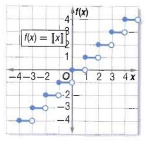

الدالة الدرجية
الدالة الدرجية : هي التي تتكون من قطع مستقيمة أفقية، وهي من الدوال المتعددة التعريف الخطية الشهيرة. كمان أن دالة أكبر عدد صحيح التي تكتب على الصورة [[f(x) = [[x ، هي مثال على الدالة الدرجية حيث أن الرمز [[x]] أكبر عدد صحيح أقل من أو يساوي x.
الدالة الرئيسية (الأم) للدالة الدرجية : [[x]] = f(x)
شكل التمثيل البياني : قطع مستقيمة أفقية.
المجال : مجموعة الأعداد الحقيقية.
المدى : مجموعة الأعداد الصحيحة.
